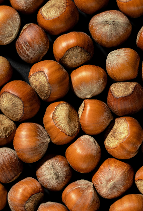

Rapporti di Sostenibilità Ferrero S.p.A.

Report di Sostenibilità 2024
Il nostro progresso in merito alla sostenibilità si concentra su quattro pilastri: protezione dell’ambiente, approvvigionamento sostenibile degli ingredienti, promozione del consumo responsabile e valorizzazione delle persone. Scopri il nostro ultimo report per approfondire i risultati raggiunti nell'ultimo anno, le nostre strategie, le iniziative per l'economia circolare e il nostro impegno per il benessere dei dipendenti e delle comunità locali.
Scarica il PDFRapporti Precedenti
Scopri come il nostro percorso negli anni passati ci ha aiutato ad arrivare dell'anno corrente, tra obiettivi raggiunti ed ambizioni per il futuro